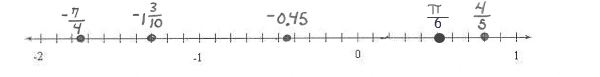

3.3 Ordering Numbers
- Sort the teams according to their 2019-2020 win/loss ratios. List from best to worst.
NBA Team Wins Losses Boston Celtics 43 21 Denver Nuggets 43 22 LA Clippers 44 20 Los Angeles Lakers 49 14 Milwaukee Bucks 53 12 Toronto Raptors 46 18 Milwaukee Bucks, LA Lakers, Toronto Raptors, LA Clippers, Boston Celtics, Denver Nuggets -
Graph each number in the list on the given number line. List the numbers from smallest to largest.
\(375 \%,-\frac{42}{11}, \sqrt{33},-0.19, \frac{9}{8}\)


-
Graph each number in the list on the given number line. List the numbers from smallest to largest.
\(-0.45, \frac{4}{5},-1 \frac{3}{10},-\frac{7}{4}, \frac{\pi}{6}\)


- Graph each number in the list on the given number line. List the numbers from smallest to largest.
A = -1.4B = -2.8C = -2.6D = -1.2

- Identify the largest number in each pair. Compare the numbers using <, >, or =.
- 4.1667 4.167
<
- -5.234 -5.2345
>
- 5/8 7/11
<
- 3/4 -3/8
>
- 4.1667 4.167